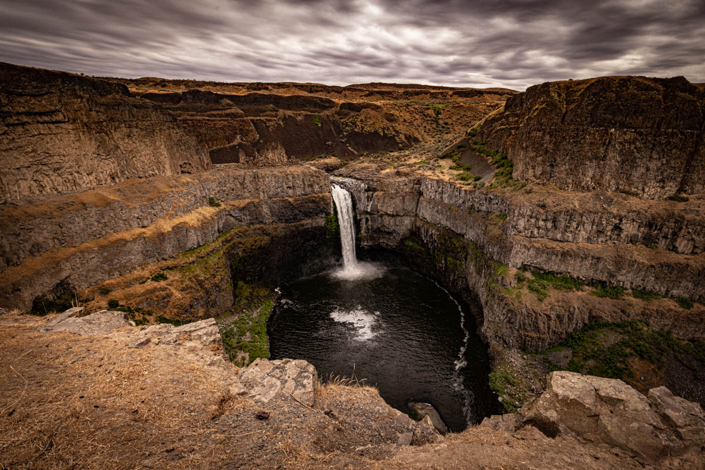
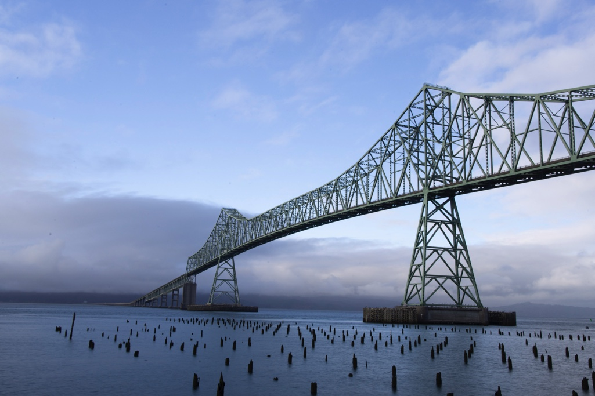

Photo Galleries
Select a gallery below for more photos

The Wild
I am constantly amazed by the wonders of the wild. Plants and animals continue to surprise me and some never cease to make me smile.
Visit The Wild Gallery

Landscapes
I grew up in both the city and the country. I appreciate the beauty in the open spaces of the rural and scenic areas.
Visit the Landscapes Gallery

Structures
Here are some beautiful structures I've found in my travels that have been created through times old and new.
Visit the Structures Gallery